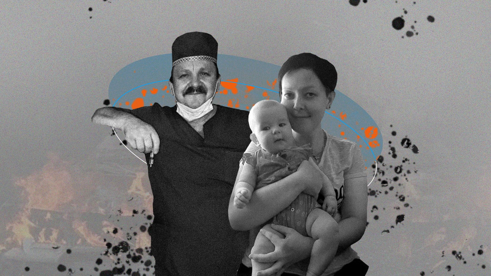

«Мені було страшно. У нас стріляли. Машина загорілася»
11 березня 2022 року в автівку, якою родина Поповиченків тікала з охопленого війною Сєвєродонецька, поцілив снаряд. Один уламок влучив Ганні Поповиченко в ногу. Другий поранив у стегно її подругу, 34-річну Марину, яка з донькою теж виїжджала з міста. Батько Ганни, що був за кермом, зазнав смертельного поранення в голову.
Машина спалахнула. Жінки з дітьми намагалися відповзти від машини, яка могла вибухнути будь-якої миті. Ганна лежала на засніженому полі й думала про свій червоний пуховик, що міг стати мішенню. Проте саме він урятував її.
Ця історія про людей, які вижили, і тих, кому не вдалося.
Трав’яний танк
Київ. Червень 2022 року. Неподалік станції метро «Політехнічний інститут» комунальники облаштували клумбу у формі трактора, що тягне танк. Пахне свіжоскошеною травою. Поряд фотографуються люди.
Повз інсталяцію проходить 39-річна Ганна Поповиченко з донькою, дворічною Марічкою. Дівчинка коментує все, що бачить, засипає маму питаннями. А коли очі зупиняються на «трав’яному танку», Марічка завмирає. «Зараз він буде по нас стріляти», — кричить і притискається до матері.
Ганна намагається пояснити, що це клумба, її нічого боятися. Очі дитини повні сліз.